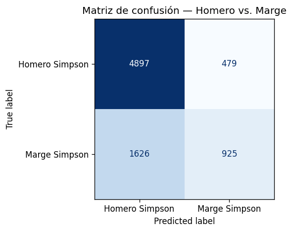
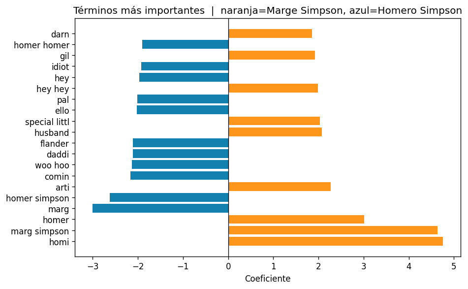
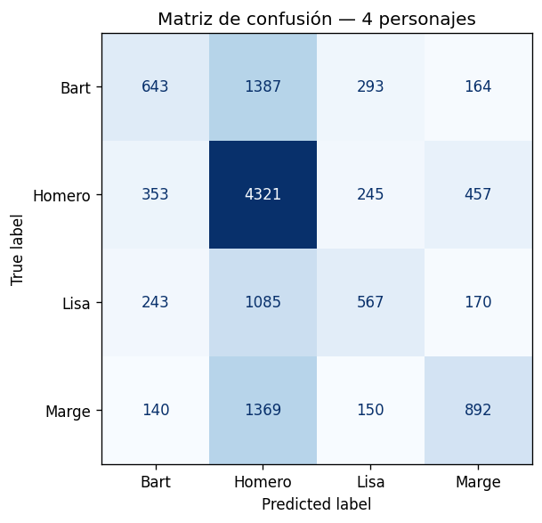
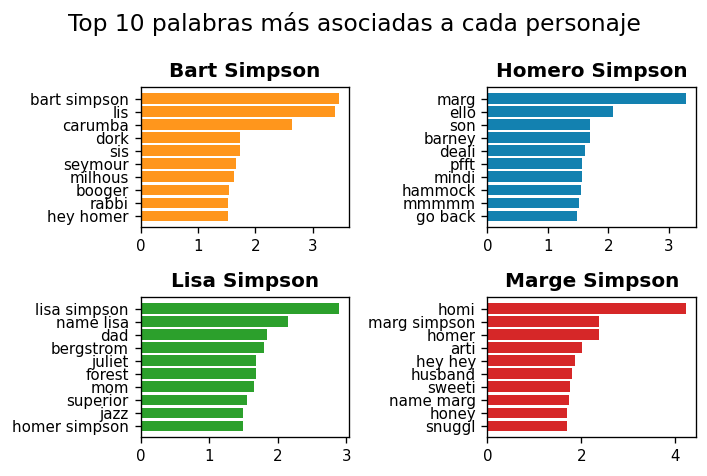

data = pd.read_parquet("data/data_simpsons.parquet")
print(f"Shape: {data.shape}")
print(f"Columnas: {data.columns.tolist()}")Shape: (69171, 2)
Columnas: ['raw_character_text', 'spoken_words']
Mentoría Censo: Codificación
Proyecto Ciencia de Datos
Machine Learning Supervisado con Datos de Texto
Abril 2026
El objetivo de esta clase es construir un pipeline completo de clasificación de texto, desde el texto crudo hasta la evaluación del modelo.
Trabajaremos con un dataset de diálogos de Los Simpsons. Contiene las líneas de 4 personajes: Homero, Marge, Bart y Lisa.
Veamos cuántas líneas tiene cada personaje:
raw_character_text
Homero Simpson 29782
Marge Simpson 14141
Bart Simpson 13759
Lisa Simpson 11489
Name: count, dtype: int64Homero tiene casi 3 veces más líneas que Lisa. Este desbalance de clases será relevante al evaluar el modelo.
Algunos ejemplos de diálogos:
for personaje in data['raw_character_text'].unique():
ejemplo = data[data['raw_character_text'] == personaje]['spoken_words'].dropna().iloc[0]
print(f"[{personaje}]: {ejemplo}")[Lisa Simpson]: Where's Mr. Bergstrom?
[Bart Simpson]: Victory party under the slide!
[Homero Simpson]: Never thrown a party? What about that big bash we had with all the champagne and musicians and holy men and everything?
[Marge Simpson]: Lisa, tell your father.Hay filas con texto vacío. Las eliminamos antes de continuar:
print(f"Filas antes: {len(data):,}")
data_filter = data.dropna(subset=['spoken_words'])
data_filter = data_filter[data_filter['spoken_words'].str.strip().astype(bool)].copy()
print(f"Filas después: {len(data_filter):,}")
print(f"Eliminadas: {len(data) - len(data_filter):,}")Filas antes: 69,171
Filas después: 64,773
Eliminadas: 4,398El texto crudo contiene mucho “ruido”: signos de puntuación, números, mayúsculas, palabras muy frecuentes que no aportan significado (la, el, los, a…).
Si no limpiamos, nuestra matriz de palabras tendrá miles de columnas irrelevantes, lo que aumenta el costo computacional y puede perjudicar al modelo.
La limpieza reduce la dimensionalidad y hace que las palabras que sí importan tengan más peso relativo.
No existe una receta única: la decisión depende del corpus y del problema.
| Paso | Descripción | Ejemplo |
|---|---|---|
| Minúsculas | Unifica variantes | Homero → homero |
| Eliminar puntuación y acentos | Quita .,:;!?...áéó... |
D'oh! → Doh |
| Eliminar números | Quita dígitos | Channel 6 → Channel |
| Eliminar stopwords | Palabras vacías | a, la, el... |
| Mínimo de caracteres | Descarta palabras cortas | es → eliminada |
| Frecuencia mínima | Descarta palabras muy raras | términos únicos → eliminados |
| Stemming | Reduce a raíz de la palabra | corriendo → corr |
| Lematización | Reduce a forma canónica | mejor → bueno |
Los dos últimos pasos son opcionales y más costosos computacionalmente. La lematización suele ser más precisa que el stemming pero requiere modelos externos (e.g., spaCy).
Stemming
SnowballStemmer de nltk.Lematización
spaCy con un modelo de idioma.Definimos una función que aplica todo el pipeline de limpieza:
stop_es = set(stopwords.words('spanish'))
stemmer_es = SnowballStemmer("spanish")
stop_en = set(stopwords.words('english'))
stemmer_en = SnowballStemmer("english")
def quitar_acentos(texto):
texto = unicodedata.normalize('NFD', texto)
texto = ''.join(c for c in texto if unicodedata.category(c) != 'Mn')
return texto
def limpiar_texto(texto, stopwords, stemmer):
texto = texto.lower() # minúsculas
# texto = quitar_acentos(texto) # eliminar acentos
texto = re.sub(r'\d+', ' ', texto) # eliminar números
texto = re.sub(r'[^\w\s]', ' ', texto) # eliminar puntuación
tokens = texto.split()
tokens = [t for t in tokens if t not in stopwords and len(t) >= 3] # stopwords + largo mínimo
tokens = [quitar_acentos(t) for t in tokens]
tokens = [stemmer.stem(t) for t in tokens] # stemming
return ' '.join(tokens)
print(limpiar_texto("hola, Homero. Cómo te encuentras en el día de hoy?",
stopwords=stop_es, stemmer=stemmer_es))hol homer com encuentr dia hoyAplicamos la función a todo el corpus:
data_filter['texto_limpio'] = data_filter['spoken_words'].apply(limpiar_texto,
stopwords=stop_en, stemmer=stemmer_en) #Cambiamos a inglés
# Comparamos longitud antes y después
tokens_antes = data_filter['spoken_words'].str.split().str.len().sum()
tokens_despues = data_filter['texto_limpio'].str.split().str.len().sum()
print(f"Tokens sin preprocesar: {tokens_antes:,}")
print(f"Tokens preprocesados: {tokens_despues:,}")
print(f"Reducción: {(1 - tokens_despues/tokens_antes)*100:.1f}%")Tokens sin preprocesar: 603,750
Tokens preprocesados: 297,275
Reducción: 50.8%Atención
Cambiamos a inglés las stopwords y el stemmer, pues el dataset de Los Simpsons son los diálogos en inglés, solo traducimos los nombres de los personajes por facilidad.
Las palabras más frecuentes luego del preprocesamiento:
| término | frecuencia | |
|---|---|---|
| 0 | get | 3187 |
| 1 | like | 2992 |
| 2 | well | 2757 |
| 3 | know | 2628 |
| 4 | dad | 2334 |
| 5 | one | 2266 |
| 6 | bart | 2171 |
| 7 | right | 1993 |
| 8 | look | 1933 |
| 9 | hey | 1922 |
| 10 | marg | 1911 |
| 11 | homer | 1902 |
| 12 | think | 1822 |
| 13 | want | 1803 |
| 14 | got | 1711 |
Note
hola
Los modelos de ML necesitan números como entrada, no palabras.
El preprocesamiento limpia el texto, pero no lo convierte en números todavía.
La vectorización transforma cada documento en un vector numérico que puede ser la fila de una tabla.
Existen múltiples enfoques; veremos los dos más clásicos: BOW y TF-IDF.
Flujo completo: texto crudo → limpieza → vectorización → modelo de ML
La bolsa de palabras (BOW) construye una tabla donde:
El “orden” de las palabras se pierde: solo importa la frecuencia. De ahí el nombre “bolsa”.
Resultado: una matriz dispersa (sparse matrix) con muchos ceros.
ejemplo = [
"Soy intelectual, muy inteligente, soy intelectual, muy inteligente. Tú no, niño",
"El niño no es inteligente",
"Cómete mis pantaloncillos, niño",
]
#ejemplo = ejemplo*100 # repetimos para simular un corpus más grande
vectorizer = CountVectorizer()
bow_matrix = vectorizer.fit_transform(ejemplo)
pd.DataFrame(
bow_matrix.toarray(),
columns=vectorizer.get_feature_names_out()
)| cómete | el | es | intelectual | inteligente | mis | muy | niño | no | pantaloncillos | soy | tú | |
|---|---|---|---|---|---|---|---|---|---|---|---|---|
| 0 | 0 | 0 | 0 | 2 | 2 | 0 | 2 | 1 | 1 | 0 | 2 | 1 |
| 1 | 0 | 1 | 1 | 0 | 1 | 0 | 0 | 1 | 1 | 0 | 0 | 0 |
| 2 | 1 | 0 | 0 | 0 | 0 | 1 | 0 | 1 | 0 | 1 | 0 | 0 |
Palabras frecuentes dominan: términos como el, es, mi tienen conteos altísimos aunque no sean informativos (por eso aplicamos stopwords antes).
No considera el contexto: “él no es inteligente, es pillo” y “él no es pillo, es inteligente” producen el mismo vector.
Alta dimensionalidad: con miles de documentos y vocabularios extensos, la matriz puede tener decenas de miles de columnas.
A pesar de sus limitaciones, BOW funciona sorprendentemente bien en muchas tareas de clasificación de texto.
En BOW, una palabra que aparece mucho en todos los documentos tiene un conteo alto pero aporta poco para distinguir entre documentos.
TF-IDF recompensa las palabras que son frecuentes en un documento pero raras en el resto del corpus.
Una palabra con TF-IDF alto es “especial” para ese documento: aparece mucho ahí pero poco en los demás.
\[TF(t,d) = \frac{\text{veces que } t \text{ aparece en } d}{\text{total de términos en } d}\]
\[IDF(t) = \log\left(\frac{\text{N° total de documentos}}{\text{N° de documentos que contienen } t}\right)\]
\[TF\text{-}IDF(t,d) = TF(t,d) \times IDF(t)\]
Diferencias con sklearn
El paquete sklearn, en su implementación base calcula una fórmula ligeramente distinta \[TF(t) = \text{veces que } t \text{ aparece en } d ; IDF(t) = \log\left(\frac{\text{1+ N° total de documentos}}{\text{1+ N° de documentos que contienen } t}\right)+1\]
Tiene una serie de ajustes para que funcione mejor en casos límite, como divisiones por 0.
| 0 | 1 | 2 | |
|---|---|---|---|
| cómete | 0.000 | 0.000 | 2.099 |
| el | 0.000 | 2.099 | 0.000 |
| es | 0.000 | 2.099 | 0.000 |
| intelectual | 4.197 | 0.000 | 0.000 |
| inteligente | 2.811 | 1.405 | 0.000 |
| mis | 0.000 | 0.000 | 2.099 |
| muy | 4.197 | 0.000 | 0.000 |
| niño | 1.000 | 1.000 | 1.000 |
| no | 1.405 | 1.405 | 0.000 |
| pantaloncillos | 0.000 | 0.000 | 2.099 |
| soy | 4.197 | 0.000 | 0.000 |
| tú | 2.099 | 0.000 | 0.000 |
Note
Notar cómo niño tiene valor 1, más bajo que palabras como cómete o pantaloncillos, que son exclusivas de un solo documento.
| BOW | TF-IDF | |
|---|---|---|
| Implementación | Muy simple | Simple (1 paso extra) |
| Palabras comunes | Les da mucho peso | Las penaliza |
| Palabras distintivas | No las destaca | Las favorece |
| Mejor cuando… | Corpus pequeños, palabras clave poco frecuentes | Corpus grandes, queremos discriminar por vocabulario específico |
Una pequeña regla práctica: si van a probar solo uno, en la mayoría de tareas de clasificación, TF-IDF da mejores resultados que BOW puro. Si hay tiempo, vale la pena probar ambos (en cualquier caso, resultados serán similares).
Hasta ahora sabemos preprocesar y vectorizar. Para entrenar un clasificador necesitamos:
y): la etiqueta de cada documento (en nuestro caso, el personaje).Empezaremos con un caso binario (Homero vs. Marge) para introducir las métricas de evaluación, y luego expandiremos a los 4 personajes.
Filtramos el dataset para quedarnos solo con dos personajes:
# Eliminamos filas con texto limpio vacío
data_filter = data_filter[data_filter['texto_limpio'].str.strip().astype(bool)].copy()
# Filtramos solo Homero y Marge
data_bin = data_filter[data_filter['raw_character_text'].isin(
['Homero Simpson', 'Marge Simpson']
)].copy()
print(f"Diálogos Homero + Marge: {len(data_bin):,}\n")
print(data_bin['raw_character_text'].value_counts())Diálogos Homero + Marge: 39,632
raw_character_text
Homero Simpson 26878
Marge Simpson 12754
Name: count, dtype: int64Homero tiene aproximadamente el doble de líneas que Marge (~68% vs ~32%). Un modelo que prediga siempre “Homero” tendría ~68% de accuracy sin haber aprendido nada.
Separamos los datos manteniendo la proporción de clases (stratified split):
X_bin = data_bin['texto_limpio']
y_bin = data_bin['raw_character_text']
X_train_bin, X_test_bin, y_train_bin, y_test_bin = train_test_split(
X_bin, y_bin,
test_size=0.2,
random_state=42,
stratify=y_bin # mantiene proporción de clases en ambos sets
)
print(f"Train: {len(X_train_bin):,} documentos")
print(f"Test: {len(X_test_bin):,} documentos")
print(f"\nDistribución en train:\n{y_train_bin.value_counts()}")Train: 31,705 documentos
Test: 7,927 documentos
Distribución en train:
raw_character_text
Homero Simpson 21502
Marge Simpson 10203
Name: count, dtype: int64sklearn permite encadenar vectorización y modelo en un solo objeto. Esto resuelve automáticamente un problema importante: el set de test usará solo el vocabulario aprendido en train.
pipeline_bin = Pipeline([
('vectorizer', CountVectorizer(
min_df=10, # ignora términos que aparecen en menos de 10 docs
ngram_range=(1,2), # Usamos monogramas y bigramas
max_features=20000 # límite al vocabulario
)),
('clf', LogisticRegression(
max_iter=1000,
C=1.0 # inverso de la regularización
))
])
pipeline_binPipeline(steps=[('vectorizer',
CountVectorizer(max_features=20000, min_df=10,
ngram_range=(1, 2))),
('clf', LogisticRegression(max_iter=1000))])In a Jupyter environment, please rerun this cell to show the HTML representation or trust the notebook. Con Pipeline, cuando llamamos .predict(X_test), el vectorizador transforma el test usando el vocabulario del train. No hay riesgo de fuga de información ni errores por columnas nuevas.
Note
¿Qué son los n-gramas? Un n-grama es una secuencia contigua de n palabras. Con ngram_range=(1,2) el vectorizador toma como features tanto palabras sueltas (unigramas) como pares de palabras consecutivas (bigramas). Por ejemplo, “no me gusta” genera los features no, me, gusta, no me, me gusta. Los bigramas capturan algo del contexto que BOW pierde (negaciones, expresiones hechas), a costa de aumentar el tamaño del vocabulario.
Hasta ahora separamos los datos en train (entrenar) y test (evaluar al final). Pero, ¿cómo elegimos hiperparámetros o comparamos modelos sin tocar el test?
La validación cruzada (k-fold CV) divide el set de train en k partes (folds):
Ventaja: aprovecha mejor los datos y entrega una estimación más estable del desempeño que un único train/validation split.
StratifiedKFold mantiene la proporción de clases en cada fold — importante con clases desbalanceadas.
El test set sigue intocado hasta el final. La CV se hace dentro del train.
Entrenamos con validación cruzada para estimar el desempeño antes de evaluar en test:
cv = StratifiedKFold(n_splits=5, shuffle=True, random_state=42)
scores_f1 = cross_val_score(
pipeline_bin, X_train_bin, y_train_bin,
cv=cv, scoring='f1_macro'
)
print(f"F1-macro (CV 5-fold): {scores_f1.mean():.3f} ± {scores_f1.std():.3f}")
# Entrenamos el modelo final en todos los datos de train
pipeline_bin.fit(X_train_bin, y_train_bin)
print("Modelo entrenado.")F1-macro (CV 5-fold): 0.639 ± 0.005
Modelo entrenado.Recordemos: Homero tiene ~68% de las líneas en este subset. Un modelo que prediga siempre “Homero” tendría un 68% de accuracy sin haber aprendido nada.
Necesitamos métricas que consideren qué tipo de error estamos cometiendo.
Las métricas clave son:
En clasificación binaria, la matriz de confusión es una tabla 2×2 que muestra las predicciones correctas e incorrectas:
y_pred_bin = pipeline_bin.predict(X_test_bin)
cm_bin = confusion_matrix(y_test_bin, y_pred_bin)
disp = ConfusionMatrixDisplay(
confusion_matrix=cm_bin,
display_labels=pipeline_bin.classes_
)
fig, ax = plt.subplots(figsize=(5, 4))
disp.plot(ax=ax, colorbar=False, cmap='Blues')
ax.set_title('Matriz de confusión — Homero vs. Marge')
plt.tight_layout()
plt.show()
Cada celda tiene un nombre específico (tomando a Marge como la clase “positiva”):
| Predicho: Homero | Predicho: Marge | |
|---|---|---|
| Real: Homero | True Negative (TN) | False Positive (FP) |
| Real: Marge | False Negative (FN) | True Positive (TP) |
Note
Notar que tradicionalmente la clase más pequeña es tomada como la positiva, pues es la más difícil o interesante de acertar (fraude bancario, enfermedad, etc).
\[Precisión = \frac{TP}{TP + FP}\]
De todas las líneas que el modelo dijo que eran de Marge, ¿cuántas realmente las dijo Marge?
Penaliza los falsos positivos.
\[Recall = \frac{TP}{TP + FN}\]
De todas las líneas que realmente dijo Marge, ¿cuántas identificó el modelo?
Penaliza los falsos negativos.
\[F1 = 2 \cdot \frac{Precisión \times Recall}{Precisión + Recall}\]
classification_report entrega precisión, recall y F1 para cada clase:
precision recall f1-score support
Homero Simpson 0.75 0.91 0.82 5376
Marge Simpson 0.66 0.36 0.47 2551
accuracy 0.73 7927
macro avg 0.70 0.64 0.65 7927
weighted avg 0.72 0.73 0.71 7927
Podemos ver estas métricas por separado para cada clase. Esto es fundamental cuando hay desbalance: un buen resultado en Homero no garantiza un buen resultado en Marge.
Comparamos ambas estrategias de vectorización:
def metricas(nombre, y_true, y_pred):
return {
'Modelo': nombre,
'Accuracy': round(accuracy_score(y_true, y_pred), 3),
'Precision': round(precision_score(y_true, y_pred, average='macro'), 3),
'Recall': round(recall_score(y_true, y_pred, average='macro'), 3),
'F1-macro': round(f1_score(y_true, y_pred, average='macro'), 3)
}
pipeline_tfidf_bin = Pipeline([
('vectorizer', TfidfVectorizer(min_df=10, max_features=20000, ngram_range=(1, 2))),
('clf', LogisticRegression(max_iter=1000, C=1.0))
])
pipeline_tfidf_bin.fit(X_train_bin, y_train_bin)
y_pred_tfidf_bin = pipeline_tfidf_bin.predict(X_test_bin)
pd.DataFrame([
metricas("Reg. Logística — BOW", y_test_bin, y_pred_bin),
metricas("Reg. Logística — TF-IDF", y_test_bin, y_pred_tfidf_bin)
])| Modelo | Accuracy | Precision | Recall | F1-macro | |
|---|---|---|---|---|---|
| 0 | Reg. Logística — BOW | 0.734 | 0.705 | 0.637 | 0.645 |
| 1 | Reg. Logística — TF-IDF | 0.741 | 0.724 | 0.635 | 0.644 |
En clasificación binaria, la regresión logística tiene un solo vector de coeficientes. Las palabras con coeficiente positivo apuntan a una clase y las negativas a la otra:
feature_names = pipeline_bin.named_steps['vectorizer'].get_feature_names_out()
coefs = pipeline_bin.named_steps['clf'].coef_[0]
coef_df = (pd.DataFrame({'término': feature_names, 'coef': coefs})
.assign(abs_coef=lambda df: df['coef'].abs())
.sort_values('abs_coef', ascending=False)
.head(20))
clase_pos = pipeline_bin.classes_[1]
clase_neg = pipeline_bin.classes_[0]
colors = ['#FF961C' if c > 0 else '#1381B0' for
c in coef_df['coef']]
fig, ax = plt.subplots(figsize=(8, 5))
ax.barh(coef_df['término'], coef_df['coef'],
color=colors)
ax.axvline(0, color='black', linewidth=0.8)
ax.set_xlabel('Coeficiente')
ax.set_title(f'Términos más importantes | \
naranja={clase_pos}, azul={clase_neg}')
plt.tight_layout()
plt.show()
El caso binario nos permitió entender las métricas con claridad.
Ahora agregamos a Bart y Lisa: pasamos de clasificación binaria a multiclase (4 clases).
El pipeline es exactamente el mismo. Lo que cambia es cómo se calculan y promedian las métricas.
X = data_filter['texto_limpio']
y = data_filter['raw_character_text']
X_train, X_test, y_train, y_test = train_test_split(
X, y, test_size=0.2, random_state=42, stratify=y
)
print(f"Train: {len(X_train):,} | Test: {len(X_test):,}")
print(f"\nDistribución en train:\n{y_train.value_counts()}")Train: 49,916 | Test: 12,479
Distribución en train:
raw_character_text
Homero Simpson 21502
Marge Simpson 10203
Bart Simpson 9951
Lisa Simpson 8260
Name: count, dtype: int64Naive Bayes es un clasificador probabilístico basado en el teorema de Bayes.
Asume que, dada la clase, las palabras son independientes entre sí (de ahí lo de naive: es una simplificación irreal pero útil).
Para cada documento, calcula \(P(\text{clase} \mid \text{palabras})\) y elige la clase más probable.
En texto se usa la variante MultinomialNB, que modela conteos de palabras (compatible con BOW y TF-IDF).
Ventajas:
pipeline_lr = Pipeline([
('vectorizer', CountVectorizer(min_df=10, max_features=20000)),
('clf', LogisticRegression(max_iter=1000, C=1.0))
])
pipeline_nb = Pipeline([
('vectorizer', CountVectorizer(min_df=10, max_features=20000)),
('clf', MultinomialNB())
])
pipeline_lr.fit(X_train, y_train)
pipeline_nb.fit(X_train, y_train)
print("Modelos entrenados.")Modelos entrenados.¿Cuándo usar cada modelo?
Ahora la matriz es de 4×4. La diagonal muestra las clasificaciones correctas:
y_pred_lr = pipeline_lr.predict(X_test)
cm = confusion_matrix(y_test, y_pred_lr, labels=pipeline_lr.classes_)
disp = ConfusionMatrixDisplay(
confusion_matrix=cm,
display_labels=['Bart', 'Homero', 'Lisa', 'Marge']
)
fig, ax = plt.subplots(figsize=(6, 5))
disp.plot(ax=ax, colorbar=False, cmap='Blues')
ax.set_title('Matriz de confusión — 4 personajes')
plt.tight_layout()
plt.show()
precision recall f1-score support
Bart Simpson 0.46 0.24 0.32 2487
Homero Simpson 0.53 0.82 0.64 5376
Lisa Simpson 0.46 0.27 0.34 2065
Marge Simpson 0.54 0.35 0.42 2551
accuracy 0.52 12479
macro avg 0.50 0.42 0.43 12479
weighted avg 0.51 0.52 0.48 12479
En multiclase, necesitamos promediar las métricas por clase. Hay dos formas principales:
| Promedio | Cálculo | Cuándo usarlo |
|---|---|---|
| macro | Promedio simple de cada clase | Cuando todas las clases importan igual, independiente de su tamaño |
| weighted | Promedio ponderado por n° de muestras | Cuando importa más el rendimiento global |
Ejemplo con nuestros datos:
f1_mac = f1_score(y_test, y_pred_lr, average='macro')
f1_wgt = f1_score(y_test, y_pred_lr, average='weighted')
print(f"F1 macro: {f1_mac:.3f} (trata a Lisa igual que a Homero )")
print(f"F1 weighted: {f1_wgt:.3f} (Homero pesa más porque tiene más líneas)")F1 macro: 0.430 (trata a Lisa igual que a Homero )
F1 weighted: 0.482 (Homero pesa más porque tiene más líneas)y_pred_nb = pipeline_nb.predict(X_test)
resultados = pd.DataFrame([
metricas("Reg. Logística (BOW)", y_test, y_pred_lr),
metricas("Naive Bayes (BOW)", y_test, y_pred_nb)
])
resultados| Modelo | Accuracy | Precision | Recall | F1-macro | |
|---|---|---|---|---|---|
| 0 | Reg. Logística (BOW) | 0.515 | 0.498 | 0.419 | 0.430 |
| 1 | Naive Bayes (BOW) | 0.517 | 0.498 | 0.425 | 0.437 |
pipeline_tfidf = Pipeline([
('vectorizer', TfidfVectorizer(min_df=10, max_features=20000)),
('clf', LogisticRegression(max_iter=1000, C=1.0))
])
pipeline_tfidf.fit(X_train, y_train)
y_pred_tfidf = pipeline_tfidf.predict(X_test)
comparacion = pd.DataFrame([
metricas("Reg. Logística — BOW", y_test, y_pred_lr),
metricas("Reg. Logística — TF-IDF", y_test, y_pred_tfidf)
])
comparacion| Modelo | Accuracy | Precision | Recall | F1-macro | |
|---|---|---|---|---|---|
| 0 | Reg. Logística — BOW | 0.515 | 0.498 | 0.419 | 0.430 |
| 1 | Reg. Logística — TF-IDF | 0.524 | 0.513 | 0.422 | 0.434 |
Los resultados pueden variar según el corpus. Lo importante es siempre comparar al menos estas dos estrategias de vectorización antes de decidir.
En multiclase, la regresión logística tiene un vector de coeficientes por cada clase. Veamos las 10 palabras más asociadas a cada personaje:
feature_names = pipeline_lr.named_steps['vectorizer'].get_feature_names_out()
clases = pipeline_lr.classes_
fig, axes = plt.subplots(2, 2, figsize=(12, 8))
colores = ['#FF961C', '#1381B0', '#2ca02c', '#d62728']
for idx, (clase, ax, color) in enumerate(zip(clases, axes.flat, colores)):
coefs = pipeline_lr.named_steps['clf'].coef_[idx]
top_idx = np.argsort(coefs)[-10:]
ax.barh(feature_names[top_idx], coefs[top_idx], color=color)
ax.set_title(clase, fontsize=12, fontweight='bold')
ax.tick_params(labelsize=9)
plt.suptitle('Top 10 palabras más asociadas a cada personaje', fontsize=14)
plt.tight_layout()
plt.show()
datos de texto
│
▼
[1] Limpieza limpiar_texto():
lower → sin números → sin puntuación
→ sin stopwords → stemming
│
▼
[2] Vectorización CountVectorizer() ←── BOW
TfidfVectorizer() ←── TF-IDF
│
▼
[3] Train / Test train_test_split(..., stratify=y)
│
▼
[4] Pipeline Pipeline([vectorizer, clf])
LogisticRegression | MultinomialNB
│
▼
[5] Evaluación classification_report()
→ Accuracy, F1, Precision, Recall
confusion_matrix()Algunas extensiones naturales a lo visto hoy:
SVC, RandomForestClassifier, XGBClassifier — todos compatibles con el mismo Pipeline.spaCy en lugar de stemming.CountVectorizer(ngram_range=(1, 2)) para incluir bigramas.GridSearchCV sobre el pipeline completo.predict_proba() para optimizar precisión vs. recall según el problema.
Mentoría Censo: Codificación
Proyecto Ciencia de Datos
Machine Learning Supervisado con Datos de Texto
Abril 2026